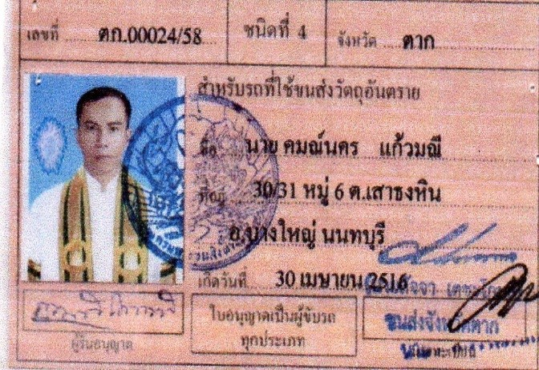

นายคมณ์นคร แก้วมณี
ประธานสมาพันธ์ผู้ขับรถยนต์สาธารณะมืออาชีพแห่งราชอาณาจักรไทย
ประวัติสมาพันธ์ผู้ขับรถยนต์สาธารณะมืออาชีพแห่งราชอาณาจักรไทย
สรุป ที่ประชุมมีมติให้
- ผู้ช่วยศาสตราจารย์ ดร.ทองดี เล็กโสภี ผู้ใช้บริการรถแท็กซี่และรถตู้โดยสาร ซึ่งมองเห็นปัญหาเช่นกันเป็นประธานที่ปรึกษาสมาพันธ์ฯ
- นายคมณ์นคร แก้วมณีทำหน้าที่ประธานสมาพันธ์ผู้ขับรถยนต์สาธารณะมืออาชีพแห่งราชอาณาจักรไทย
- น.ส.อภิยมาตย์ เนตวัน ทำหน้าที่เลขาธิการสมาพันธ์ผู้ขับรถยนต์สาธารณะมืออาชีพแห่งราชอาณาจักรไทย
- น.ส.ชรินรัตน์ บัวบาน ทำหน้าที่งานเทคนิคและประชาสัมพันธ์
- นายธนชัย รัตนวงศ์ ทำหน้าที่ประสานงานและกิจการพิเศษ
- น.ส.ศิริพร ทะประสพ ทำหน้าที่ประสานงานและกิจการพิเศษ
- นายวิเชียร เดชะโสภณ ทำหน้าที่รองเลขาธิการสมาพันธ์ฯ
ประวัติการศึกษาผู้ร่วมก่อตั้งสมาพันธ์ผู้ขับรถยนต์สาธารณะมืออาชีพแห่งราชอาณาจักรไทย
- นายคมณ์นคร แก้วมณี นิติศาสตร์ มหาวิทยาลัยสุโขทัยธรรมาธิราช
- น.ส.อภิยมาตย์ เนตวัน ศิลปศาสตร์ มหาวิทยาลัยรามคำแหง
- น.ส.ชรินรัตน์ บัวบาน เกษตร มหาวิทยาลัยสุโขทัยธรรมาธิราช
- นายธนชัย รัตนวงศ์ ธุรกิจการจัดการ วิทยาลัยทองสุข
- น.ส.ศิริพร ทะประสพ บัญชี มหาวิทยาลัยกรุงเทพ
- นายวิเชียร เดชะโสภณ วิศวกรรมศาสตร์ มหาวิทยาลัยเกษมบัณฑิต